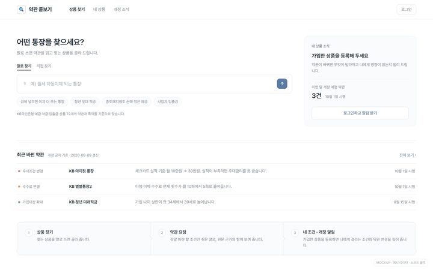
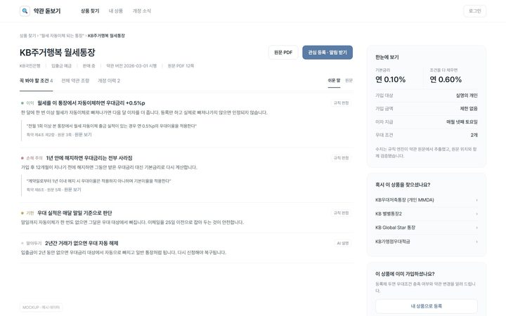

약관 돋보기 Terms Magnifier
금융상품 약관을 원문 근거와 연결해 쉽게 설명하는 웹 서비스입니다. 사용자가 고른 예금상품에 대해 가입조건·금리·혜택·주의사항을 보여주고, 결과를 "가입조건 충족 / 미충족 / 추가 정보 필요 / 은행 확인 필요"로 나눠 안내합니다. 금융취약계층을 위해 쉬운 문장과 최소 입력을 목표로 합니다. A web service that explains bank product terms in plain language, with each point linked to the original clause. For a chosen deposit product it shows eligibility, interest rates, benefits and caveats, and sorts results into "eligible / not eligible / more information needed / check with the bank". It aims for plain sentences and minimal input for financially vulnerable users.


내가 맡은 일My part
프론트엔드 담당. 소수 인원 팀이라 기획·데이터 작업까지 함께 맡았습니다. Frontend lead. In a small team, I also took on planning and data work.
- 서비스 화면 전체 구현 — 상품 찾기, 말로 찾기(자연어 검색), 상품 상세, 개정 소식Built all service screens — product finder, natural-language search, product detail, revision news
- 화면 설계서(v2.3)와 웹 서비스·정책 정의서 작성Wrote the screen design spec (v2.3) and the web service and policy definitions
- 목업 시안 제작, UI 체크리스트로 화면 품질 관리Produced mockups and managed UI quality with a checklist
- 중간발표 시연 준비 — 서버 상태 점검, 데이터·모델 담당과 일정 조율Prepared the mid-term demo — checked server status and coordinated with the data and model leads
- 약관 데이터 수집·정리, 요약 모델 비교 작업에 참여Took part in collecting and organizing terms data and comparing summary models
서비스 구성 (팀)How the service works (team)
- 공개된 은행 예금상품 약관·특약·상품설명서 수집과 구조화Collects and structures publicly available deposit terms, riders and product sheets
- 개인화 판정은 생성 AI가 임의로 하지 않고, 검증 가능한 규칙 엔진으로 처리Eligibility is decided by a verifiable rule engine, not left to generative AI
- 한국어 요약 모델 비교 — KoBART, EXAONE, Mi:dm, Qwen3, SolarCompares Korean summary models — KoBART, EXAONE, Mi:dm, Qwen3, Solar
통번역에서 해온 일, 즉 "어려운 말을 상대가 이해하는 말로 옮기는 일"을 금융 약관에 적용한 프로젝트입니다. What I did as an interpreter — turning difficult language into words the listener understands — applied to bank terms.